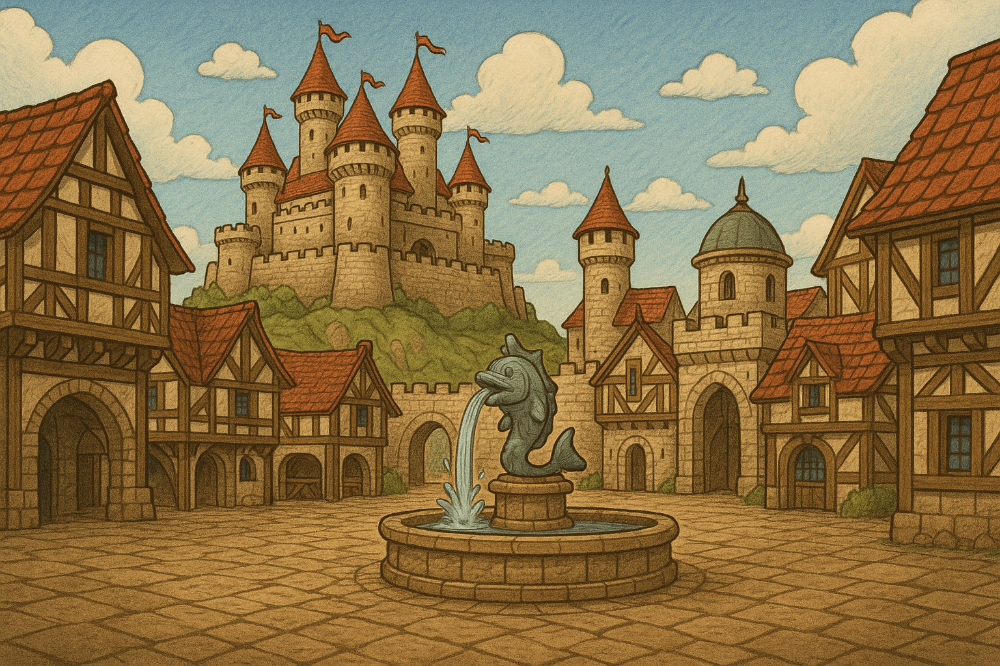
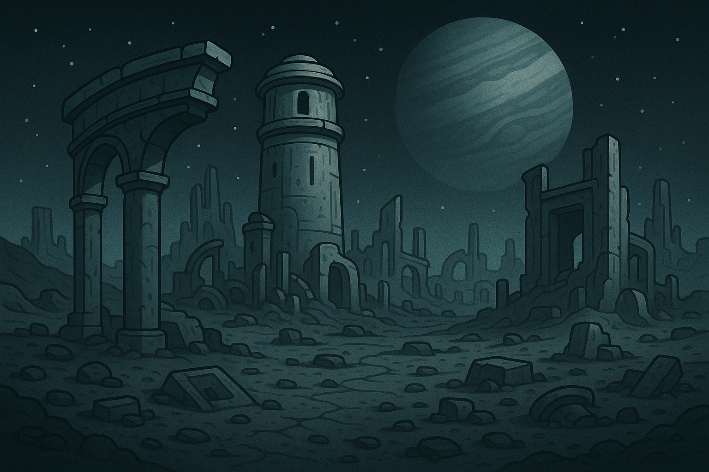
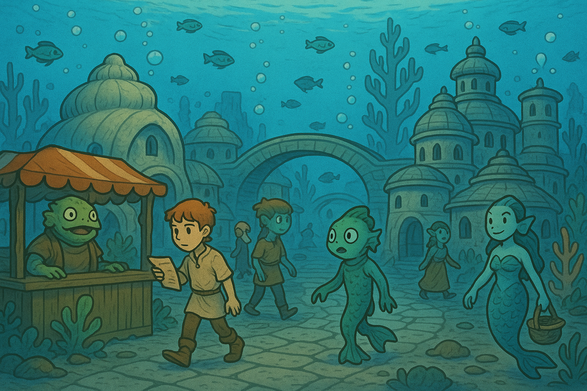
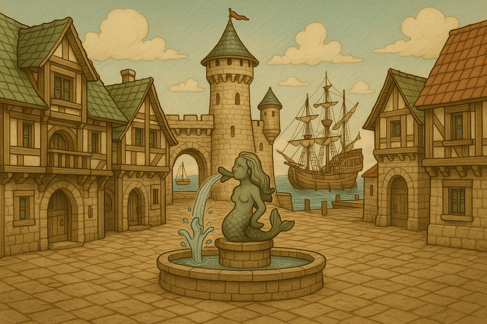
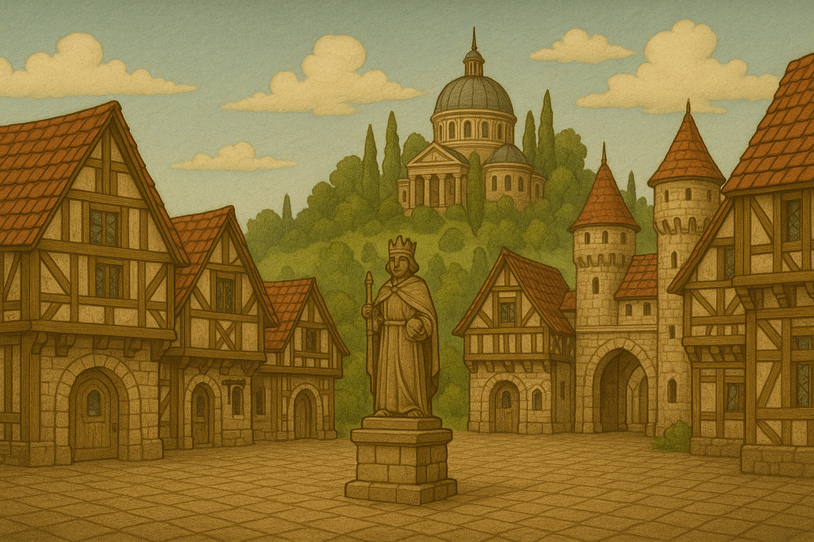
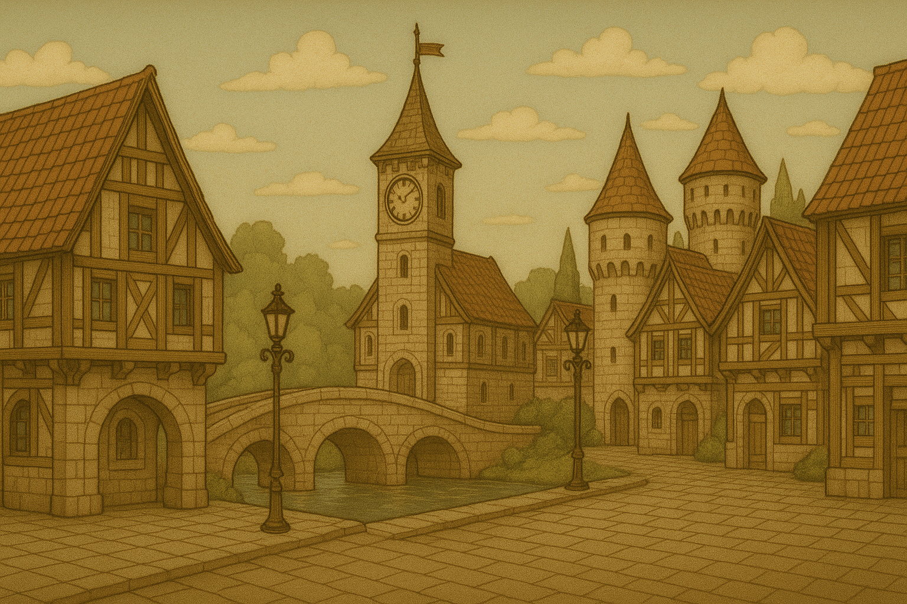

Cities
Bellhorn
 The seaside town of Bellhorn thrums with life and legend. Overlooking the sparkling ocean, its proud stone walls and red-tiled rooftops shelter cobbled streets that echo with the songs of merchants, the clang of blacksmiths, and the laughter of children. At its heart lies the dolphin fountain, a beloved symbol said to bring luck to sailors and wisdom to dreamers. Towering above the town is the ancient Bellhorn Castle, its many turrets crowned with crimson pennants that flutter in the salty breeze. Bellhorn is known not only for its thriving fish markets and skilled shipwrights but also for its deep-rooted magical heritage—strange lights are sometimes seen over the water at night, and whispers of sea-spirits linger in the mist. With a soul as rich as its history, Bellhorn is a place where tales begin, and destinies unfold—especially for one young adventurer who calls it home.
The Great Lift
 Once a thriving outpost of a highly advanced spacefaring civilization, this desolate moon now lies in eerie silence beneath the gaze of its giant planet. Towering ruins—once bustling starports and research towers—stand fractured and hollow, their edges smoothed by centuries of wind and time. Monolithic arches and crumbling gateways hint at monumental architecture, their scale suggesting a species with vast knowledge and ambition. Scattered among the rubble are remnants of alien technology half-buried in dust, their functions long forgotten. What remains is a haunting monument to a civilization that reached the stars—and then vanished, leaving only stone and shadow behind.
The Great Dip
 This enchanting underwater city, nestled beneath the waves and hidden from the surface world, bustles with life and charm. Dome-roofed stone buildings line cobblestone streets, their windows glowing faintly through the blue-hued waters. Grand arches and coral-lined paths connect neighborhoods in a maze of aquatic architecture, seamlessly blending natural ocean beauty with old-world craftsmanship. Fish swim freely among the streets, and vibrant corals grow beside market stalls where fish-folk vendors offer wares to a diverse mix of residents—humans, mermaids, and amphibious beings living in harmony. The city is protected by a magical atmosphere that allows all air-breathing and aquatic creatures to coexist, speaking and moving as if above land. Accessing this hidden world requires bravery: travelers must dive into a massive whirlpool known as the "Veil of Currents," which spirals them down into the depths. To return to the surface, one must swim upward through a shimmering tunnel of water that parts only for those who are ready to leave. The city's serene wonder and peaceful coexistence make it a sanctuary for explorers and outcasts alike.
Brinemaw
 Brinemaw is a bustling port town where sea spray lingers in the salty breeze and ships creak rhythmically at the docks. Its weathered stone buildings and timber-framed inns lean slightly from centuries of coastal wind, yet stand proud beneath slate roofs tinged green with age. At the heart of the square, a mermaid fountain gurgles with charm, spouting water as if whispering ancient tales of the deep to those who pass. Traders, sailors, and curious travelers crowd the cobbled streets, bartering under the watchful gaze of a sea-worn watchtower. Brinemaw lives and breathes with the ocean—it is a town both shaped by and devoted to the sea.
Cavewood
 Cavewood is a town of hushed reverence and hidden grandeur, nestled at the foot of a forested hill crowned by a domed sanctum said to house ancient wisdom. The cobbled square, flanked by timbered homes and guarded by stone towers, is anchored by a solemn statue of the town’s founder—King Eldric the Keeper. Unlike its neighboring cities, Cavewood is known not for trade or warfare, but for its devotion to lore and learning. The air is filled with quiet purpose, as scholars, mystics, and travelers pass through its archways seeking the secrets whispered by the wind among the towering cypress trees. Every building, from the humblest inn to the grand observatory above, tells of a people who prize knowledge and memory above all else.
Clearstall
 Clearstall exudes a quiet, old-world charm, its sepia-toned streets steeped in the rhythm of timeless tradition. Cobblestone paths wind past timber-framed homes with steep red roofs, while wrought-iron lamps cast gentle evening glows upon arching stone bridges and ivy-lined towers. At the heart of Clearstall stands a tall clocktower that sings its hourly chime with warm solemnity, watched over by twin turrets that hint at a forgotten past of sentinels and secrets. The townsfolk, proud and unhurried, are artisans and storytellers, their windowsill herbs and hand-painted signs whispering stories of a place where memory lingers like mist above the water. With hills of evergreens cradling it from behind, Clearstall feels like a dream suspended in golden dusk—peaceful, watchful, and utterly unforgettable.
Denstraw
 Denstraw was a breathtaking city built upon the massive shell of a great sea turtle, a marvel of symbiosis between architecture and nature. Its buildings, crafted from stone and coral, blended harmoniously with the marine environment, their spires and arches rising gracefully from the turtle’s back as it roamed the ocean depths. Bioluminescent flora illuminated the city in soft hues, and jellyfish drifted serenely through its watery avenues. A vibrant and mysterious community thrived here, dependent entirely on the turtle’s ancient wanderings. But now, with the fall of Denstraw into the sea’s dark embrace—as tragically reported in the Gazette—the city's beauty has become a lost memory, submerged along with its guardian.
Denstraw was a breathtaking city built upon the massive shell of a great sea turtle, a marvel of symbiosis between architecture and nature. Its buildings, crafted from stone and coral, blended harmoniously with the marine environment, their spires and arches rising gracefully from the turtle’s back as it roamed the ocean depths. Bioluminescent flora illuminated the city in soft hues, and jellyfish drifted serenely through its watery avenues. A vibrant and mysterious community thrived here, dependent entirely on the turtle’s ancient wanderings. But now, with the fall of Denstraw into the sea’s dark embrace—as tragically reported in the Gazette—the city's beauty has become a lost memory, submerged along with its guardian.